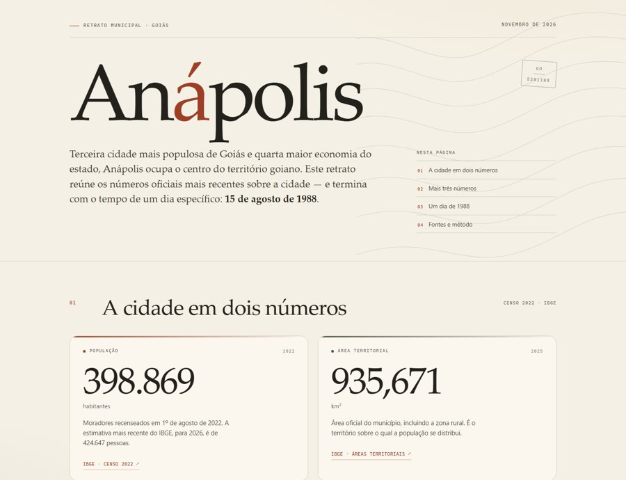

Missão 4 de 5
Minha cidade em dados
Uma página com os números da sua cidade, cada um com a fonte, e o tempo no dia em que você nasceu.

Antes de começar
- Faça no notebook ou computador. O Antigravity precisa estar instalado (como instalar) e a internet, funcionando.
- Nesta missão não há kit: o agente busca os dados em sites públicos, como o IBGE.
- Crie uma pasta vazia chamada minha-cidade em Documentos.
Faça comigo
Minha cidade em dados
-
Abra uma pasta vazia
Crie minha-cidade em Documentos e abra no Antigravity com Open Folder (Abrir pasta). Confira o nome da pasta no alto da janela.
-
Troque a cidade e a data, e envie
Use dados públicos, como os do IBGE. Faça um retrato de Anápolis (GO): população no Censo 2022, área, PIB, IDHM e densidade, cada número com o ano, a fonte e o link. Diga como estava o tempo na cidade em 15 de agosto de 1988, com a estação usada e a distância até a cidade. Salve como retrato.html nesta pasta. Não invente números: se não achar um dado, ou se ele não foi medido, diga isso.
Cole na caixa de mensagem do Antigravity. Troque as duas partes marcadas: a cidade com a sigla do estado, e a data inteira (a do seu nascimento, por exemplo). Depois aperte Enter.
-
Deixe ele procurar
5 a 15 minutos
Fique na tela: ele vai pedir para abrir sites e baixar dados. Sites oficiais, como IBGE, INMET e NOAA: aprove.
-
Abra o retrato.html
Na pasta minha-cidade, botão direito em retrato (ou retrato.html), Abrir com, e escolha o navegador.
-
Confira um número na fonte
Clique no link ao lado da população. O número do IBGE para o Censo 2022 é o mesmo da sua página? Confira o ano.
O que aconteceu no teste
O mesmo dia, dois números
Pedimos o tempo de 15 de agosto de 1988 duas vezes. Uma resposta deu mínima de 13 °C e “0 mm de chuva”. A outra deu 12 °C e avisou que a chuva não foi medida naquele dia.
As duas usaram a mesma estação, com cálculos diferentes. A primeira tratou a falta de medição como zero; a segunda avisou que o dado faltava. Por isso o pedido exige a estação e “se não foi medido, diga”.
Agora sozinho
Compare com outra cidade
Na mesma conversa (sem abrir uma nova), peça os mesmos cinco números da capital do seu estado, lado a lado com os da sua cidade.
Deu errado?
- Ele não achou o tempo do dia
- Nem toda cidade tem estação meteorológica, e os registros antigos têm falhas. Peça: “Use a estação mais próxima e diga a distância até a cidade.”
- Um número parece estranho
- Clique no link da fonte. Se não bater, diga: “A população no site do IBGE é outra. Confira e corrija.”
- Está demorando muito
- Com internet lenta, ou com a sala inteira na mesma rede, pode passar de 15 minutos. Se travar, pare e peça só a primeira parte: os números da cidade, sem o tempo.
- A página não abre
- Confira se o arquivo termina em .html. Clique nele com o botão direito, Abrir com, e escolha o navegador.
- Apareceu um aviso de limite
- Na sala, continue no computador do colega. Em casa, o limite volta na semana seguinte; o que já foi feito fica salvo na pasta.